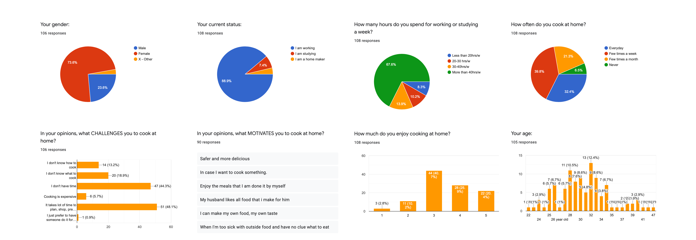

Weekly Meal Prep
Mobile Application
Personal project
My role: Product design

The WeeklyMealPrep app is a good choice for people who want to spend less time in the kitchen. This app helps you not only prepare meals for a whole week but also gives you a way to reach your nutrition goals.
Background Information
I was inspired to create this app after having conversation with my friends when we shared our cooking routines. I realized that making meals for dinner every night was a challenge to most of us while we usually have a hectic schedule and commonly coming home late after work. There were several times I found myself staring into the fridge searching for cooking inspiration, but after a long day at work, the creativity was not on top. The idea of preparing meals for a whole week ahead of schedule seems a benefit for most people in this case. It’s especially good for busy people when it comes to time-matter and healthy eating plans.
...
Process
User research > User Persona > Ideate > Wireframe > Visual Design > User Test > Final Prototype
User research
The survey
I started this user research with the assumption that the target users will be young people. They are students or professional working persons who live in big cities and have an active life. I developed a survey with Google Forms then distributed it among multiple groups of the working profession on Facebook and Whatsapp.
The purpose was to define:
- Users' cooking habits
- What motivates them to cook at home on daily basis
- The pain points if have during their cooking process.
The online survey includes 8 questions and had completed by 108 people that provided me the quantitative data needed to validate my assumptions.
Keys findings:
- Users occupation and their cooking habit.
More than 70% of people who did the survey are office staff and students in the range of 25-35 years old. They usually spend 20-40 hours or more per week working and studying. But they still try to cook meals from several times to once a day per week. - Motivations.
Around 85% of them enjoy cooking at home for some reasons: cost-saving, healthy meals, having dinner with family, etc.
Here are some of their thoughts about it:
- "It's safe and hygiene. I also can customize the ingredients based on my taste."
- "It's healthy and saving a lot. I feel pleasure while cooking and enjoying the food I cooked."
- "Very interesting! I enjoy my cooking time and also able to share that inspiration with my friends."
- "It’s better and safer than eating out, besides I can improve my cooking skills."
- "It's cost-effective and I can cook authentic dishes which I could not easily find in the nearby restaurants." - Pain points.
Throughout the cooking process, the most common problems that people face are:
- It takes a lot of time to plan, shop, prepare, and cook --> 48%
- They don't have much time for cooking --> 44%
- Some of them don't know what to cook & how to cook --> 13-19%
User Interviews
To get more qualitative insights about people home cooking process, I conducted user interview with three people based on the following questions:
- What's your typical weekday like?
- Can you describe your food preparation and cooking process?
- How do you create a meal plan?
- What does your grocery shopping list look like?
Besides, I observed two people, one male, one female while they perform their daily activities. The goal is to understand their natural behavior without interrupting them or affecting their routine.
The takeaways:
- All of the people who participated in the interviews and observation sessions go to work 30-40hrs per week so they prefer to spend 3-4hrs on the weekend to plan and shop grocery for the upcoming week.
- 3/5 do meal preparation and cook right after they get home from the grocery stores. 2/5 do meal preparation, keep it well in the fridge, and cook later on weekdays.
- Some of them use the "Note" - one of the mobile applications to create grocery lists, while, others use a piece of paper to do it. These shopping lists are about to keep them stay on track and avoid wasting food.
- To prepare meals for a week, people tend to pick around three major protein dishes to start. Then combine each of them with veggies, fruit, etc. to balance their meals.
- They google cooking instructions or watch tutorial videos on Youtube if they want to try new recipes.